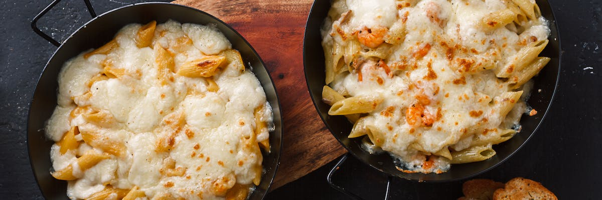

Embracing Comfort: The Perfect Macaroni and Cheese Recipe

Introduction:
Comfort food is an essential part of our culinary repertoire, and few dishes embody this better than the classic Macaroni and Cheese. Here's a tried and tested recipe that's sure to delight your taste buds and bring a nostalgic warmth to your table.
Ingredients for Perfect Macaroni and Cheese
- 2 cups of elbow macaroni
- 2 tablespoons of butter
- 2 tablespoons of all-purpose flour
- 2 cups of milk
- 2 cups of shredded sharp cheddar cheese
- Salt and pepper to taste
- 1/2 cup of breadcrumbs (optional for topping)
Cooking Instructions
- Cook the macaroni according to package instructions, drain, and set aside.
- In a saucepan, melt butter over medium heat. Stir in the flour and cook for about a minute, stirring constantly.
- Gradually whisk in the milk, ensuring no lumps form. Cook until the mixture thickens, about 5 minutes.
- Reduce the heat and stir in the shredded cheddar cheese until it melts and forms a smooth sauce.
- Season the cheese sauce with salt and pepper to taste.
- Add the cooked macaroni to the cheese sauce, stirring until well coated.
- If desired, transfer the mixture to a baking dish, sprinkle breadcrumbs on top, and bake at 350°F (175°C) until golden and bubbly.
Serving Suggestions
Serve the macaroni and cheese hot, straight from the oven, for a deliciously creamy and satisfying meal. Pair it with a crisp salad or some steamed vegetables for a well-rounded dining experience.
Conclusion:
Macaroni and Cheese, a beloved classic, brings not just a burst of flavors but also a comforting feeling that transcends generations. Embrace the simplicity and indulgence of this timeless dish, and let it become a staple on your comfort food menu.